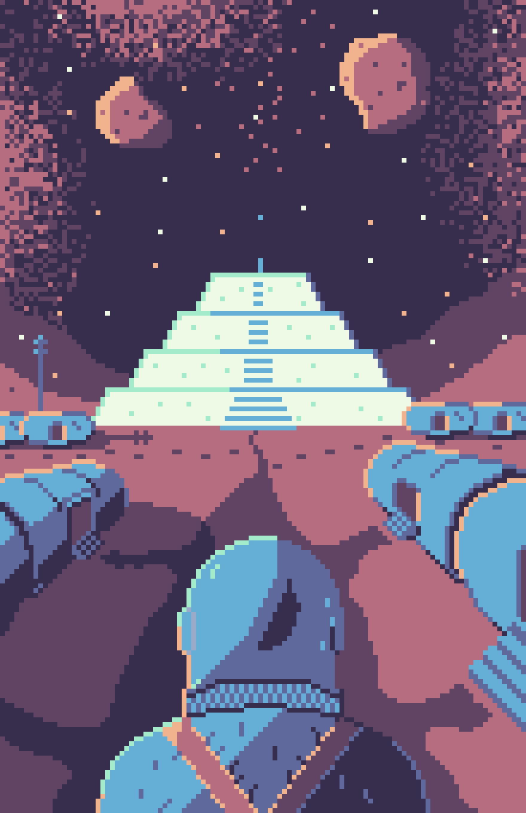
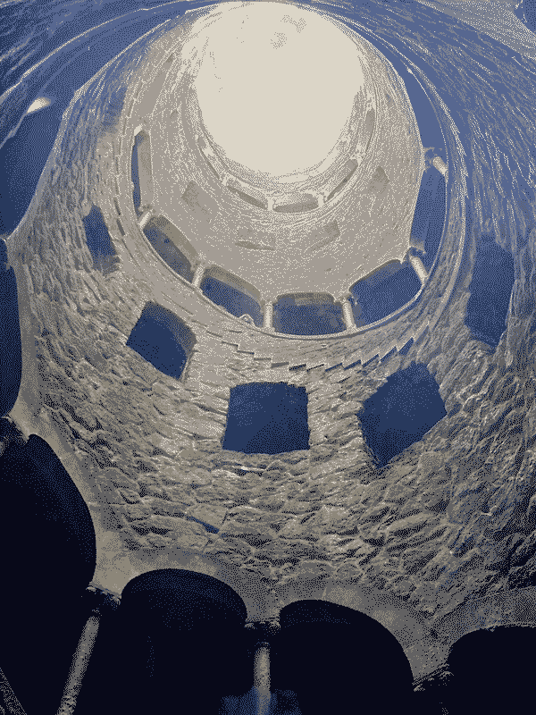

Building the web I want to see

Sun Oct 20 2024:
I have made a webring! This feels important to me as I try (along with many others) to build a better
web. This was a project I have been meaning to take on for some time. I did start with a basic set of
links to friends in the footer of my website, but I wanted to use it more to show the web I usually interact
with.
I would still like to add a little flair and some organization to the webring page, but I am trying to build
this website without delivering ... Read more
Over the Garden Wall poster

Very excited to watch Over the Garden Wall again with some friends! This is easily one of my favorite pieces of media in general.
It is a wonderful piece of Americana and plays with nostalgia in a delightfully bittersweet wa... Read more
Underhill from Red Mars

I've been reading the Mars Trilogy by Kim Stanley Robinson. I've been loving these books and flying through them. This was how I imagined the initial settlement, Underhill, with it's barrel-shaped shelters and giant salt pyramid.
... Read more
Your project is worth it

After reading a blog post from Andrew Dana Hudson about thermochauvinism, I have begun referring to July as "Hot
Winter," a time of year when I spend most of my time indoors because ... Read more
We cannot afford to skip repairs

Maintenance and repair are essential to a more sustainable, and frankly pleasant world. Well-maintained
bikes feel, sound, and ride better. Well-maintained roads are easier and safer for everyon... Read more
My Kingdom for a Paper Map

Recently returned from a ten day vacation in Lisbon, Portugal to celebrate my mother-in-law's birthday. This
is the longest trip I've taken since Ruby and I spent three weeks in Ireland for our ... Read more
My interest in Solarpunk

Over the past few years, I have been taking in a lot of Solarpunk influences.
Solarpunk is a movement/genre/aesthetic/practice based around ultra-sustainability, averting climate climate
... Read more